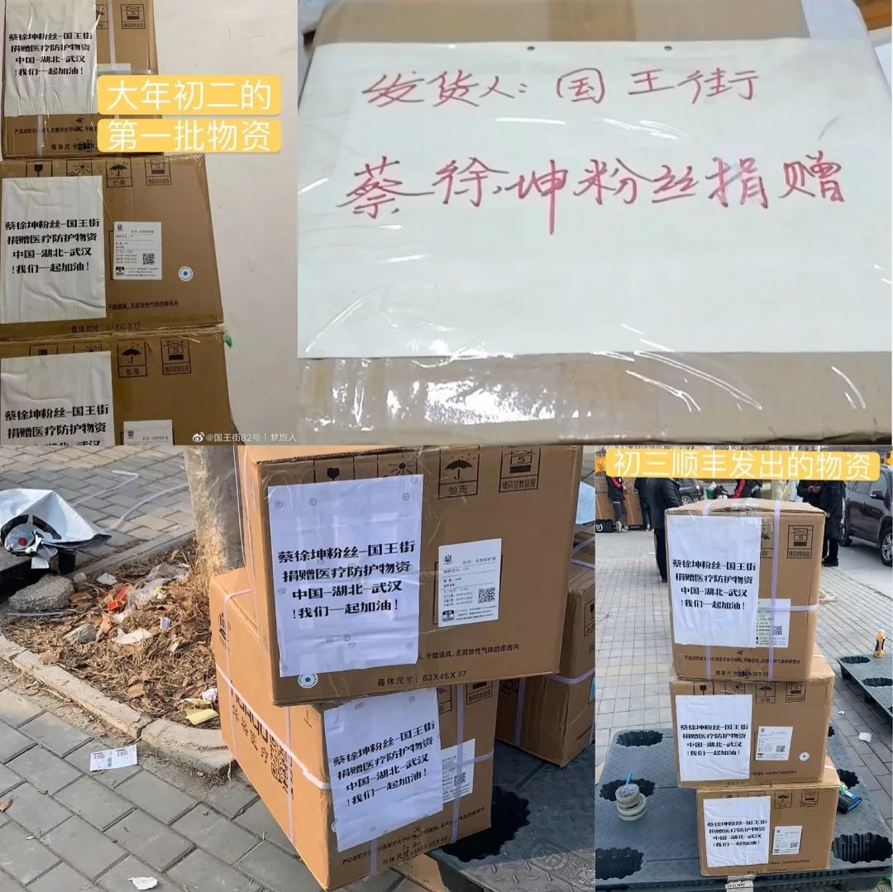
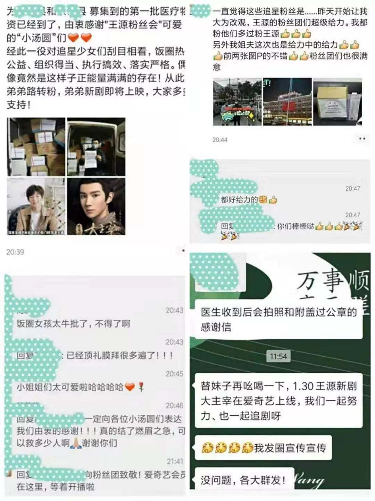

数十亿善款下的艰难一面：假冒航空公司诈骗、口罩临时毁约涨价
原文链接 备份链接 来源：腾讯新闻《潜望》 栏目 作者：张珺 从北上广深等城市筹集善款到口罩、防护服发放到医生护士手中，需要经历多少难关？ 1月初开始新型冠状病毒席卷中国，商业公司、基金会、普通民众、海外华侨留学生，捐赠速度空前。包括企业 …

目前，几个粉丝站的物资除了少量还在路上，大部分已经送到需要的人手里，然而尽管如此，全国各地的物资缺口仍然很大。
文 | 王超 高逸佳 薛雨霏
编辑 | 沈小山
“这些天大家也真的很拼了，晚上核对整理信息有时三四点才睡，梦里还操着心。”“王源粉丝联合”的唐溪说。
这几天，她和组织里的糖糖以及其余成员一直在对接驰援武汉事宜。
“当时粉丝私信比较多，都在问我们做不做这件事情。”
“王源粉丝联合”是众多参与援助湖北的粉丝团之一，她们是几十个粉丝站的联合，每逢本粉圈有重大应援或公益就会集结起来。这次湖北遭遇重大新型冠状病毒肺炎疫情，截止1月29日，她们购买的两批20万口罩和15万医用手套已分别在大年初一和初五送达武汉市和大众视线未聚焦的周边市县受捐人的手上，而第三批物资正在路上。
大约20号，在媒体刚开始集中报道疫情时，就有个别粉丝有意要做捐助，并各自通过自己的人脉开始对接资源，出于粉圈的默契和互相信任，她们自然而然地联合在一起，对自己能联系到的资源做了一个整合，最后形成一个6人小组，主要负责这次捐赠。

“王源粉丝联合”捐赠的物资
而此时有意愿做捐助的粉丝不止一家。
成立有一年半、专门组织公益活动的“朱一龙公益应援个站”，是受访的粉丝组织中最先落实募捐活动的。1月21日，公益后援站负责人收到了大批粉丝私信：“当时粉丝私信比较多，都在问我们做不做这件事情？”当天晚上，他们20多分钟就筹集到善款 178286.26 元，购置口罩、酒精棉片、洗手液送往疫区。

“朱一龙公益应援个站”的捐赠物资
“钱是钱，但是钱不可能立刻变成物资，又长着翅膀飞到想去的地方”
“很多事情想是一回事，真正去做要面对非常多细节上困难，钱是钱，但是钱不可能立刻变成物资，又长着翅膀飞到想去的地方”糖糖感叹道：“（做这件事）最大的感想就是大家都很难。”
“医院最需要的还是N95 、3M的1860和9132，还有一线防护服，但这个目前市面上都很少，甚至国外都缺货了，这个一直非常紧缺 。”“王源粉丝联合”的潇潇在天天接触捐助事宜之后对口罩型号和供求状况如数家珍。
决定好援助疫区的具体方式，成员们估算了到达时间，选择最急需和非焦点的地方，进行优先联络。于是第一批物资她们锁定了一批非定向医院以及一线民警和志愿者。
“王源粉丝联合”的杨愿称“亚心医院是非定点医院，但是去就医的患者又非常之多，保护医疗人员的同时也照顾到有基础疾病的患者，因为他们也是被新型冠状病毒感染机率最高的。”而糖糖则对社区比较了解，“我们知道他们也是风险很高的工作。但是很容易缺少必要的关注。”于是第一批物资也同时送到了民警、志愿者和社区手里。
“朱一龙公益应援个站”在物资承接上没有遇到想象中的难题，但联系到的口罩厂商出现一些小问题。厂家加班做好10万片口罩时，提供包装盒的厂家已经放假，于是这批货物就用时间显示已然过期的包装盒包装。虽然厂家也出示了文件，但在物资抵达铁路局后，能量中国的工作人员担心引起误会，要求厂商重新更换货物。
“厂商觉得也是做公益嘛，就把这批货直接捐掉，把钱退给我们了。”所以她们重新采购了10万片口罩，在大年三十的晚上，通过铁路局的协调，直接将物资从仙桃火车站送往武汉铁路局。
蔡徐坤的粉丝站“国王街”原本打算直接捐款，但大年二十九那天，一位站内成员偶然得知，她平时工作中有交集的医疗设备生产厂家过年居然没有放假，还可以生产和发货。因为当时已经有医院发出了请求物资支援的公告，看到了能够对接的厂家犹如看到了希望的曙光，当晚成员们一致决定要直接向医院捐助物资。
在成员联系到物资厂家后，第二天蔡徐坤粉丝站“国王街”便与刚刚在网络上发布求助的武汉第九医院和第三医院取得联络。“国王街”的小然说道：“三十儿当天看到很多平台也开始开通捐款的通道，但我们想拼一把，和时间赛跑，用最直接和尽可能快的行动，让缺乏物资的医院以最短时间收到，能多帮助一个人是一个人。”与此同时，部分站内成员的亲友也加入进来，6万善款迅速到位。

蔡徐坤粉丝站“国王街”的捐赠物资
初一一大早，小然得知，发往湖北的物资全部需要医院出具正规需求单，否则发不走。然而这两家医院电话打不通，短信没有给到具体的联系人，并且均无法及时出具需求单。
于是成员们根据新闻报道和当地朋友的反馈，打出近百通电话并通过微信咨询，多方联系湖北省的其他医院，尤其是那些不容易被关注到但实际物资极其短缺的医疗机构，终于在初一晚上八点左右确定了最终的捐助医院名单，需求单也顺利开具并发给了厂家及物流。

大年初一小然拨打了20通电话确认快递
小然无奈地说：“大年初二一早我们又在催命工厂，又是无数通电话，恨不得直接开车过去，急是真急，无力也是真无力。”不过好在，物资的接收与发放较为顺利，截止1月30日，三分之一的物资已经送达医院。
“对追星少女刮目相看”
打算捐助的消息发布后，无数信息迅速涌入“王源粉丝联合”成员的社交账号，芜杂的信息“令人头痛”，使她们一开始最大的困难就是信息筛选以及与院方、志愿者、运输方建立信任，巨大的信息量让她们做了不少“无用功”。有人提供物资采购的渠道，也有粉丝私信她们说可以人肉带物资，但考虑到安全问题，她们回绝了这些热心的粉丝。
除夕晚上遇到了物流困难，潇潇一边吃年夜饭，一边盯着手机看消息。一批20万片的口罩物资无法出发，厂家原本联系的车由于运输繁忙被卡在了武汉。于是她们多方寻找，找到了志愿者车队，25号凌晨，车队志愿者到达武汉，其他志愿者开始分发物资。从早上忙到凌晨3点，车队志愿者终于支撑不住关上了仓门。第二天发放物资的志愿者在九点半到十点取完货，车队志愿者再次出车接其他物资。
在1月29日，“王源粉丝联合”将150000支一次性手套送往武汉以外的湖北县市医院，包括浠水县、黄梅县、大冶市、仙桃市等，其中浠水县中医院是第一次收到捐助。由于不是众人视线焦点，许多医院即使发布了捐赠公告也并未收到太多资助，所以当地的志愿者特别热情，积极帮忙运发物资，其中不少人表示“对追星少女刮目相看”、“（印象）大为改观”。

志愿者对饭圈女孩的肯定
在采访快结束时，糖糖发来一则聊天记录，上面是湖北志愿者观看偶像新剧的截图，又发了一句“支持王源，支持粉丝团”还配了两颗心和一个呲牙笑脸。糖糖调侃道：“第二批志愿者说到做到”。
“我们想要做应急也是因为觉得当下的需求是最紧迫的”
1月21日，朱一龙公益应援个站筹集善款的事情在微博、豆瓣小组、晋江论坛等网络论坛上引起争议。由于当时市面上针对口罩的需求极度蹿升，加上一部分不良商贩恶意哄抬价格，一些网友质疑公益站的做法是变相的“囤积居奇”，“抢光了门店的货物害得价格上涨，害得别人买不到口罩”。
公益应援站的负责人解释，“我们的物资是直接与生产厂商对接，径直发往疫区前线，并不会截取到其他门店渠道的存货。”

“能量中国”对于争议的澄清
相对于这次疫情中临时组建的民间公益团队，饭圈的粉丝组织高效、经验丰富、凝聚力强的组织特点，帮助他们更迅速地组织起来输送物资。“朱一龙公益应援个站”募集资金的次日，物资就已经开始陆续到达。并且，由于饭圈长期以来相互监督的状态，她们的行动更加小心翼翼，生怕被抓住漏洞，遭受指责。整个过程要保证物资合格、不能高价购入、接收方要真正需要，最重要的是所有环节要公开透明。
而过程的透明度和集资的合法性也是饭圈公益常常被质疑的问题。
目前按照慈善法规定，判断公益募捐活动的合法性，第一个是要求接收善款的机构必须是公募基金会，要是取得了公募资质的组织。第二个，要求这个募款项目必须在民政部的慈善中国平台上进行过备案。第三个，要求募款的平台，必须是民政部审核通过的这十几个平台之一，比如说微公益、阿里公益、腾讯公益等等。
一些公益机构在执行公益活动的时候，出于种种客观原因，比较难以按照每家粉丝团的需求，非常清晰地执行反馈，包括返图等。所以很多粉丝站是通过自己把钱先收集起来，购买物资，再统一进行捐赠。不同于对公账户，这些个人账户能否有效地执行账目资金的监管，往往会给外界留下一些话柄。
但民间组织，比如粉丝团、校友会、同乡会等很难获得相关资质。在各方尚未反应过来，物资统一调配需要时间时，这些能迅速集结起来的民间组织也是一股难以忽视的、可以填补空白的社会力量。在国家遭遇的重大疫情面前，是否可以重新思考其中法与情的矛盾，给予这些民间力量一些新的空间？
在采访中，几个粉丝团都反映，在他们完成捐赠后，许多厂家被政府征召参与统一调配。“国王街”的小然称：“在这之后我们也收到了很多问询工厂联络方式的私信，却也都帮不上忙了，因为危机时刻国家已经开始统一调配，相信有官方介入一切都会变得更好。”比起为自己和偶像赢取大家的赞誉，她们目前更着急的是保证我们捐赠的所有物资能够尽快发到急切需要的地方去。“公告发布了，但是事情还没做完。我们要为自己的行为负责、为医护人员负责、为社会负责，但愿能解决燃眉之急。”
“王源粉丝联合”的糖糖也称她们只是想做应急：“我们不认为自己可以做得比政府和大的慈善机构更好。但是我们知道效率是非常重要的，我们想要做应急也是因为觉得当下的需求是最紧迫的，等生产物流恢复了应该会好很多，想要在最困难的时候真的帮助到他们，最快送达需要的人手上，所以所有人都非常急。”
目前，几个粉丝站的物资除了少量还在路上，大部分已经送到需要的人手里，然而尽管如此，全国各地的物资缺口仍然很大。
*文中所提人唐溪、糖糖、潇潇、杨愿、小然等皆为化名
来源｜南都周刊
END
欢迎分享到朋友圈，如想取得授权请邮件：newmedia@nbweekly.com。如果想找到小南，可以在后台回复「小南」试试看哦~

文章已于修改
原文链接 备份链接 来源：腾讯新闻《潜望》 栏目 作者：张珺 从北上广深等城市筹集善款到口罩、防护服发放到医生护士手中，需要经历多少难关？ 1月初开始新型冠状病毒席卷中国，商业公司、基金会、普通民众、海外华侨留学生，捐赠速度空前。包括企业 …
原文链接 备份链接 武汉“封城”后公共交通停运，自1月24日开始，路上开始出现民间自助形式的车队。私家车主轮班，车队昼夜不停，每天接送医护人员、运输医疗物资，每送一趟要用75%酒精浓度的消毒液喷洒一遍车辆，油钱、防护口罩、消毒液都自掏腰 …
原文链接 备份链接 你以为他们只会追星？他们从线上到线下的组织力，非常时刻竟很亮眼 粉丝团成员大多是二十岁上下的年轻人，这是他们第一次面临真正的危情时刻 本文首发于南方人物周刊 文 | 本刊记者 张明萌 实习记者 梁翰文 编辑 | 周 …
原文链接 备份链接 记者/杨宝璐 编辑/宋建华 武汉市红十字会的志愿者们 在疫情中心武汉，街头空空荡荡，但仍不断有志愿者穿梭在物资仓库、医院、高速路口运送防护物资。物资源源不断地运送进来，但1月31日，越来越多呈现在人们眼前的，却是武汉若 …
原文链接 备份链接 自从除夕夜做了筹款捐助医院的决定后，这就已经成为三个人生活的常态。 捐助发展得太快了。决定募资时，黄磊珂的目标只是4000块，刚好够买一箱楼下小卖部那样的N95口罩。他对物资标准之类的问题一无所知，唯一的判断是：“8块 …